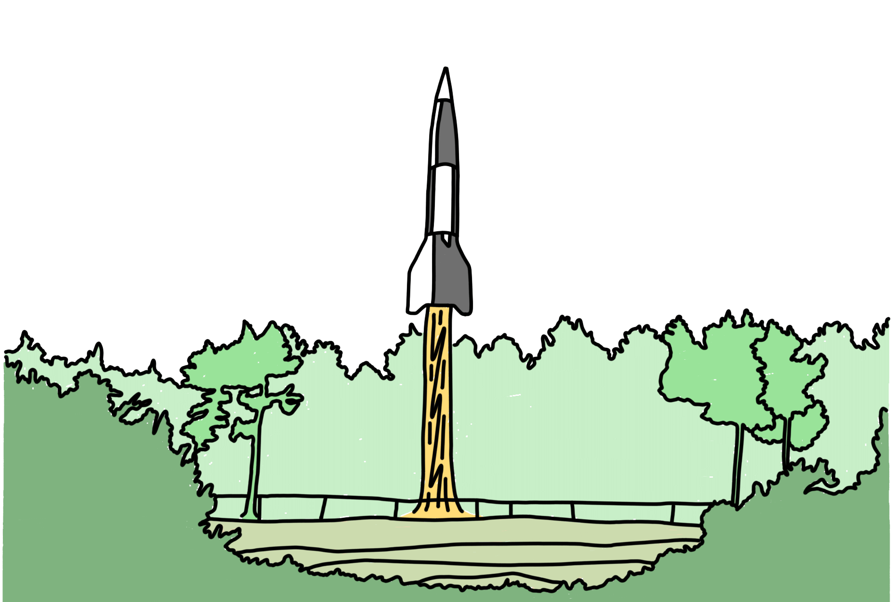

Die V2-Rakete
Es ist mein Job,
nie zufrieden zu sein.
– Wernher von Braun
Inhaltsverzeichnis

1. Einleitung
Die Entwicklung der V2-Rakete, offiziell als „Aggregat 4“ (A4) bezeichnet, markiert einen Wendepunkt in der Technikgeschichte. Mit ihr wurde erstmals eine Rakete realisiert, die in großem Maßstab produziert wurde, mehrere Hundert Kilometer Reichweite besaß und die Grenze zum Weltraum überschritt. Damit verbindet die V2 zwei Sphären: Sie steht einerseits für technische Innovation – mit ihrem Flüssigkeitstriebwerk, ihren aerodynamischen Eigenschaften und ihrem Einfluss auf die spätere Raumfahrt. Andererseits verkörpert sie ein Produkt des Zweiten Weltkriegs, das unter massivem Einsatz von Zwangsarbeit hergestellt und gegen zivile Ziele eingesetzt wurde.
Die Leitfrage dieser Arbeit lautet daher: War die V2 in erster Linie eine technische Meisterleistung oder vor allem eine Waffe der Zerstörung? Eine fundierte Antwort erfordert, sowohl die ingenieurtechnischen Errungenschaften als auch die historischen, politischen und moralischen Rahmenbedingungen einzubeziehen.
2. Historischer Kontext
Nach dem Ersten Weltkrieg schränkte der Versailler Vertrag von 1919 die deutsche Rüstungsindustrie massiv ein. Der Bau von schwerer Artillerie, Luftwaffen oder Langstreckenwaffen war untersagt. Raketenantriebe jedoch fielen nicht explizit unter diese Bestimmungen, wodurch eine Grauzone entstand. Forschung konnte hier als zivile Wissenschaft deklariert werden, obwohl militärisches Interesse früh eine Rolle spielte.
Mit der Machtübernahme der Nationalsozialisten 1933 gewann die Raketentechnik weiter an Bedeutung. Der NS-Staat förderte konsequent jede Entwicklung, die militärische Überlegenheit versprach, und Raketen boten die Möglichkeit, die Vertragsbestimmungen zu umgehen. In den 1930er Jahren entstand so ein regelrechter Wettlauf zwischen Forschungsgruppen, Wehrmacht und Industrie, die alle darauf abzielten, Deutschland in diesem Zukunftsfeld in eine führende Position zu bringen.
Der Ausbruch des Zweiten Weltkriegs 1939 wirkte schließlich als Katalysator. Was zuvor theoretische Konzepte gewesen waren, wurde nun zu konkreten Projekten. Die Erwartung an sogenannte „Wunderwaffen“ führte dazu, dass die Raketenforschung erhebliche Ressourcen und Unterstützung erhielt. Die V2 ist daher nicht allein das Ergebnis wissenschaftlicher Neugier, sondern Ausdruck der politischen und militärischen Rahmenbedingungen des Krieges.
3. Technische Grundlagen
Die V2-Rakete war in mehrfacher Hinsicht eine Pionierleistung der Ingenieurwissenschaft. Sie nutzte ein Flüssigkeitstriebwerk, das mit einer Kombination aus Ethanol und Flüssigsauerstoff betrieben wurde. Der Schub erreichte rund 25 Tonnen, was ausreichend war, um die 14 Meter lange und knapp 13 Tonnen schwere Rakete in eine ballistische Flugbahn zu bringen. Neuartig war auch die Anwendung von Pumpensystemen, die den Treibstoff zuverlässig in die Brennkammer förderten. Damit setzte die V2 Maßstäbe, die spätere Raketenentwicklungen maßgeblich beeinflussten.
Aerodynamisch zeichnete sich die V2 durch ihre Formgebung mit vier großen Leitwerken aus, die eine stabile Fluglage ermöglichten. In Kombination mit einem Kreiselsteuerungssystem und pneumatisch-hydraulischen Rudern konnte die Rakete im Flug korrigiert werden. Auch wenn die Zielgenauigkeit nach heutigem Maßstab unzureichend war, stellte diese Steuerung für die damalige Zeit eine hochentwickelte Lösung dar.
Darüber hinaus war die V2 die erste Rakete, die nachweislich die Grenze zum Weltraum überschritt: ihre Gipfelhöhe lag bei etwa 80 bis 90 Kilometern. Damit verband sie technische Elemente, die sowohl für militärische Anwendungen als auch für zukünftige Raumfahrtprojekte von zentraler Bedeutung wurden.
4. Entwicklung und Produktion
Die Entwicklung der V2 erfolgte ab Mitte der 1930er Jahre unter Leitung von Wernher von Braun und seinem Team in Kummersdorf, später im Heeresversuchsanstalt Peenemünde. Dort wurde in großem Maßstab an der Verbindung von theoretischer Forschung und praktischer Erprobung gearbeitet. Die Teststarts, zunächst mit den Vorgängermodellen A1 bis A3, mündeten schließlich in der erfolgreichen Erprobung des Aggregats 4 im Jahr 1942. Damit war die Grundlage für die Serienproduktion gelegt.
Die Fertigung selbst wurde in den letzten Kriegsjahren in das unterirdische Werk „Mittelwerk“ bei Nordhausen verlagert. Dort wurden Zehntausende Zwangsarbeiter, vor allem KZ-Häftlinge aus dem Lager Mittelbau-Dora, unter extremen Bedingungen eingesetzt. Viele von ihnen überlebten die Arbeit nicht. Diese menschenverachtenden Produktionsbedingungen gehören untrennbar zur Geschichte der V2 und relativieren jede rein technische Würdigung.
Gleichzeitig erforderte die Serienproduktion ein hohes Maß an Standardisierung und Qualitätssicherung. Bauteile wie die Turbopumpen, die Steuergeräte oder die Brennkammern mussten in bislang unbekanntem Umfang präzise gefertigt werden. Die V2 war damit auch ein Beispiel für die Industrialisierung hochkomplexer Waffentechnik – ein Prozess, der später in der Luft- und Raumfahrttechnik fortgeführt wurde.
5. Raketenoffensive und Wirkung
Die operative Phase des V2-Einsatzes begann im September 1944 und stellte den Höhepunkt der deutschen Raketenoffensive dar. Die Organisation der Batterien lag überwiegend in den Händen der Waffen-SS, die den operativen Einsatz in enger Kooperation mit Wehrmachtseinheiten durchführte. Schon früh zeigte sich, dass die logistische Komplexität der V2 den regulären Rahmen militärischer Operationen überstieg. Der Transport der Raketen, die Vorbereitung der Startplätze und die zeitaufwändige Montage bedeuteten, dass trotz hoher Erwartungen nur wenige Starts pro Tag realisiert werden konnten. Die von Hitler formulierte Hoffnung, mit der Waffe einen entscheidenden Kriegseffekt zu erzielen, erwies sich damit als illusorisch.
Der erste Einsatz gegen London markierte dennoch ein symbolträchtiges Ereignis. Die Rakete schlug ohne Vorwarnung ein, was die beabsichtigte psychologische Wirkung eindrücklich belegte. Während der Bombenkrieg der Luftwaffe durch Flak und Jagdflugzeuge zumindest teilweise abgemildert werden konnte, war die V2 aus militärischer Sicht unangreifbar: Mit Überschallgeschwindigkeit und hoher Reichweite entfaltete sie ihre Zerstörungskraft, ohne dass die Bevölkerung gewarnt oder Schutzmaßnahmen ergriffen werden konnten. Diese Unausweichlichkeit verlieh der V2 eine Aura des Schreckens und erfüllte zumindest die propagandistische Dimension des „Vergeltungsgedankens“.
In der Realität jedoch war die Effizienz der Waffe gering. Die Zahl der getroffenen Ziele stand in keinem Verhältnis zu den eingesetzten Ressourcen. In London und später auch in Antwerpen, wo die Alliierten wichtige Nachschubhafenanlagen unterhielten, verursachten die Angriffe schwere Verluste an Menschenleben und Sachgütern. Gleichwohl gelang es nicht, den Nachschub der Alliierten entscheidend zu unterbinden oder die britische Moral nachhaltig zu erschüttern. Die Bilanz der Offensive zeigt: Zwar starben durch die V2 mehrere tausend Menschen, doch im Vergleich zu den Opfern des konventionellen Bombenkriegs waren die Zahlen gering. Zudem litten die deutschen Batterien selbst unter Problemen wie Alkoholmissbrauch, niedriger Moral und sogar Sabotage, die die Einsatzbereitschaft zusätzlich minderten. Der von der SS eingesetzte Sicherheitsdienst reagierte zwar mit Härte, konnte aber die strukturellen Defizite nicht überwinden.
Die Alliierten wiederum erkannten früh, dass ein direkter Abwehrmechanismus gegen die V2 nicht existierte. Stattdessen versuchten sie, durch gezielte Bombardierungen die Nachschublinien und Startplätze zu unterbrechen. Zwar führte dies zu punktuellen Verzögerungen, ein vollständiges Stoppen der Offensive war jedoch nicht möglich. Die psychologische Dimension blieb somit der entscheidende Faktor: Die V2 war weniger eine militärische, sondern vor allem eine propagandistische Waffe. Sie verkörperte technologischen Fortschritt und sollte der Welt die vermeintliche Überlegenheit deutscher Ingenieurskunst vor Augen führen – ein Anspruch, der jedoch durch die geringe Effektivität des Einsatzes deutlich konterkariert wurde.
6. Serienproduktion
Hinter jedem Start einer V2-Rakete stand ein hoher menschlicher Preis. Schon in Peenemünde wurde Zwangsarbeit in erheblichem Umfang eingesetzt, doch die eigentliche Massenproduktion verlagerte sich nach den alliierten Bombardierungen in das unterirdische Stollensystem von Mittelbau-Dora. Hier entstand eine der brutalsten Stätten nationalsozialistischer Zwangsarbeit. Unter unmenschlichen Bedingungen arbeiteten tausende Häftlinge aus Konzentrationslagern an der Fertigung der Raketen. Hunger, Gewalt, Krankheiten und Erschöpfung führten zu einer erschreckend hohen Sterblichkeit. Schätzungen gehen von über 20.000 Todesopfern aus, die allein im Zusammenhang mit der V2-Produktion zu beklagen waren.
Die Arbeitsbedingungen in Dora verdeutlichen, dass die V2 nicht nur ein Symbol für technische Innovation war, sondern zugleich für ein moralisches Versagen von Wissenschaft und Technik. Während die Ingenieure, allen voran Wernher von Braun, den Fortschritt der Rakete betonten, wurden die Opfer dieser Entwicklung weitgehend ausgeblendet. Von Braun und andere führende Köpfe wussten um die katastrophalen Bedingungen, distanzierten sich aber von jeder Verantwortung und nahmen die Ausbeutung der Zwangsarbeiter stillschweigend in Kauf. Diese Haltung verdeutlicht den Zwiespalt zwischen wissenschaftlicher Brillanz und ethischer Blindheit.
Die Bedeutung der Zwangsarbeit für die Serienproduktion der V2 kann kaum überschätzt werden. Ohne die massenhafte Ausbeutung von Häftlingen wäre eine kontinuierliche Fertigung der Raketen nicht möglich gewesen. Gleichzeitig führte der Einsatz von Zwangsarbeitern zu Qualitätsproblemen, die sich in häufigen Fehlstarts und technischen Defekten niederschlugen. Damit wird deutlich, dass die Kombination aus hoher technischer Komplexität und menschenverachtender Produktionsweise die V2 schon strukturell daran hinderte, ihr volles Potenzial auszuschöpfen.
Im Kontext der Problemstellung – das unausgeschöpfte Potenzial der V2 – zeigt sich hier ein entscheidender Punkt: Nicht nur technische und militärische Grenzen verhinderten eine effektivere Nutzung, sondern auch die moralisch katastrophale Grundlage ihrer Produktion. Die V2 bleibt damit ein Symbol für das Spannungsfeld zwischen visionärem Fortschritt und destruktiver Entgrenzung, zwischen Ingenieurskunst und Verbrechen.
7. Mythos
Die nationalsozialistische Propaganda inszenierte die V2 von Beginn an als eine Art „Wunderwaffe“, die das Kriegsgeschehen entscheidend wenden sollte. Tatsächlich war die Realität weit weniger glorreich. Der militärische Nutzen blieb trotz des enormen technischen Aufwands begrenzt: Die Rakete war unpräzise, ihre Reichweite limitiert und die Produktionskosten unverhältnismäßig hoch. Während die Propaganda ein Bild unaufhaltsamer, technologisch überlegener Waffen zeichnete, zeigte sich in der Praxis ein anderes Bild – das der V2 als Waffe psychologischer Wirkung, nicht militärischer Effizienz.
Zudem verdeutlicht die Analyse der eingesetzten Ressourcen – sowohl an Material als auch an Arbeitskraft –, dass die V2-Entwicklung letztlich mehr zum Ausdruck nationalsozialistischer Ideologie als zu militärischem Pragmatismus beitrug. Die Rakete diente der symbolischen Machtdemonstration und sollte in den Augen der Führung den technologischen Vorsprung des „Dritten Reichs“ unterstreichen. Der tatsächliche Beitrag zur Kriegführung hingegen blieb marginal und stand in keinem Verhältnis zu den erbrachten Opfern und Aufwendungen.
8. Nachwirkungen und Bedeutung
Die Entwicklung der V2 stellte trotz ihres geringen militärischen Erfolges einen Wendepunkt in der Geschichte der Raketentechnik dar. Mit dem Kriegsende übernahmen die Siegermächte das in Peenemünde entstandene Wissen: In den USA führte die Operation „Paperclip“ zur Integration deutscher Raketeningenieure wie Wernher von Braun in das amerikanische Raumfahrtprogramm, während in der Sowjetunion ähnliche Bestrebungen verfolgt wurden. Damit setzte sich die Geschichte der V2 unmittelbar im Kontext des Kalten Krieges und des aufkommenden „Space Race“ fort.
Die V2 markierte damit eine historische Doppelfunktion: Sie war einerseits ein Produkt menschenverachtender Zwangsarbeit und Symbol nationalsozialistischer Technikgläubigkeit, andererseits aber auch die Grundlage für die spätere Entwicklung der Raumfahrt, Satellitentechnik und interkontinentaler Raketensysteme. Die Ambivalenz zwischen Fortschritt und Verbrechen, zwischen technologischem Durchbruch und moralischem Abgrund, prägt bis heute den Blick auf das Aggregat 4.
9. Download
Die auf dieser Seite vorgestellten Inhalte basieren auf meiner Seminararbeit zum Thema „V2-Rakete – Massenvernichtungswaffe mit unausgeschöpftem Potenzial?“. Hier geht es direkt zum Download der Originalarbeit: